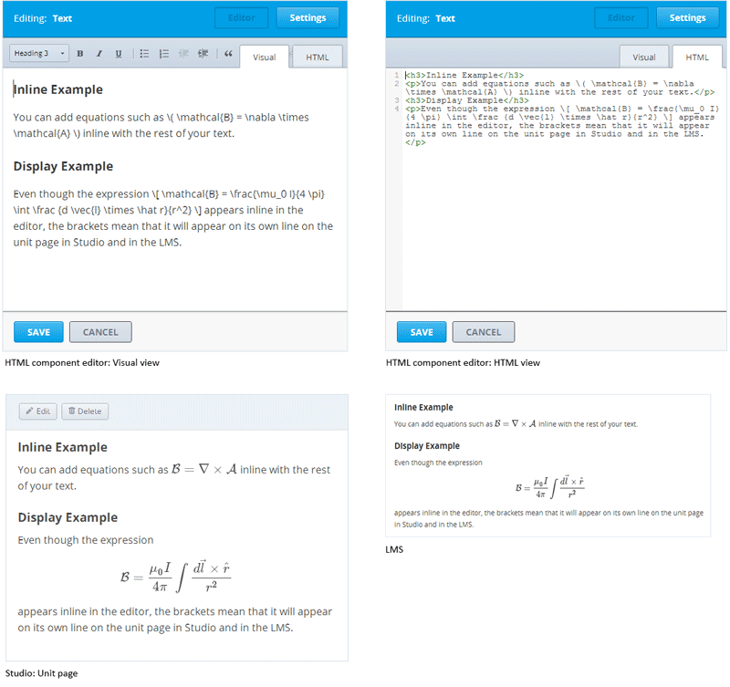
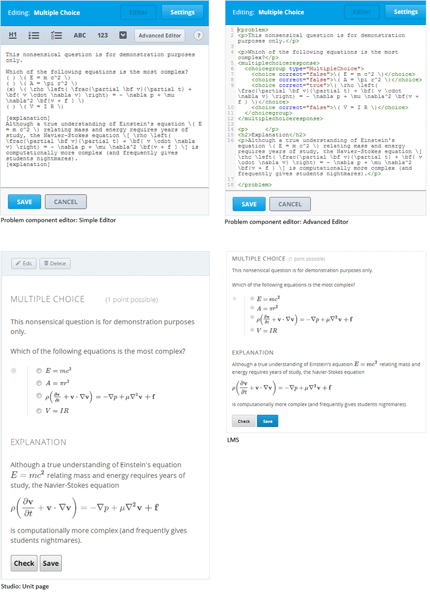

要写出清晰并且看起来专业的符号和公式,我们可以使用像LaTeX的语言，叫做`MathJax <http://www.google.com/url?q=http%3A%2F%2Fwww.mathjax.org%2F&sa=D&sntz=1&usg=AFQjCNGef2H-mZCdmCo7-kWHfu9fUGVCfg>`_. 你的MathJax公式可以和其他的文本一起出现在段落中(行间公式)或者在他们自己的段落中(独立公式).
对于行间共识,您可以进行下面两个操作之一.
在你的Mathjax表达式两边使用反斜杠’‘和**小括号**()围住.
\( 公式 \)
用[mathjaxinline]标签围住你的Mathjax表达式.用中括号标记这些标签([]).
[mathjaxinline] 公式 [/mathjaxinline]
对于独立公式,你可以做以下二者之一.
用反斜杠和**中括号**围住你的Mathjax表达式.
\[ 公式 \]
用[mathjax]标签围住你的Mathjax表达式.用中括号标记这些标签([]). square brackets ([]).
[mathjax] 公式 [/mathjax]
你可以在HTML(文本)组件和问题组件中中使用Mathjax表达式.
Note
完整的MathJax文档 (包含一个测试工具)也可以在`http://www.onemathematicalcat.org/MathJaxDocumentation/TeXSyntax.htm <http://www.google.com/url?q=http%3A%2F%2Fwww.onemathematicalcat.org%2FMathJaxDocumentation%2FTeXSyntax.htm&sa=D&sntz=1&usg=AFQjCNEV8PtCX6Csp0lW7lDKOLIKCOCkHg>`_ 找到.
在HTML组件编辑器,你在Visual视图和HTNL视图中使用MathJax.
在问题组件编辑器中,你可以在简单编辑器和高级编辑器中使用MathJax.
在下面的示例问题中,由于是用反斜杠和小括号标记的爱因斯坦方程在表达式,所以他出现在文本的里面.Navier-Stokes 方程使用中括号和反斜杠标记的，所以他出现在独立的行里.
